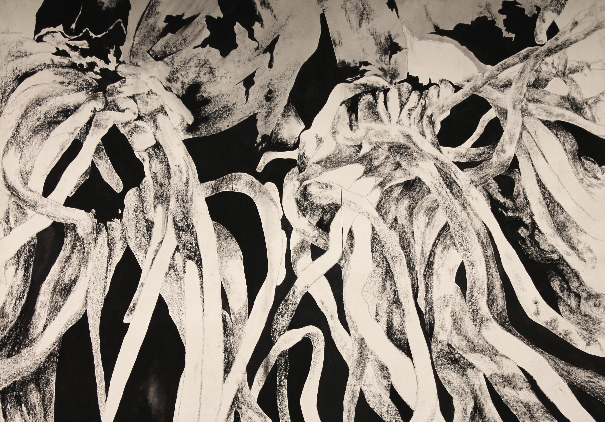

Anna is an artist, lingusit, and creative technologist based in New York City. Her current projects at Parsons School of Design explore natural language processing, interspecies communication, and generative art.
Before joining Parsons as an MFA student in Design and Technology, Anna worked on language technologies at Google and received a BA in Linguistics from Stanford.

Major Studio (Parsons, 2018)

Creativity and Computation (Parsons, 2018)


Early work